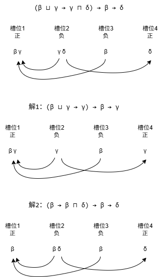

多态类型推理SimpleSub和MLsub
简介
SimpleSub 和 MLsub是编程语言理论（PL）中的类型推理方向的，一系列支持多态子类型推理的算法框架。子类型（可以想象为继承和接口之类的）其实在现实编程中用得特别多，而多态类型（可以想象一下C++的模板）其实用的也多。这个算法可以让编译型语言也不用写很多类型标注，同时它在程序分析领域也可能有着很广泛的应用。
资源总结
按时间线：
- 2016 Dolan的PhD paper，提出了被称为MLsub的系统，是最原始的资源。但是偏理论。到中间才介绍自动机和图等算法，最后的算法不涉及前几章的理论。（我反复看了，略懂一些，有问题可以发邮件问我）代码是OCaml写的。
- 2020 SimplSub 论文和代码和博客
- CubiML系列博客，以及系列代码CubiML -> IntercalScript -> polysubML。
入门优先看几篇博客，然后考虑看SimpleSub论文，这个论文作者专门希望没什么基础的人也能看懂，对着代码讲。然后可以考虑看看相关代码。MLsub原代码和论文比较难懂，优先级最低。
Introduction
简单来说： - 子类型：子类型的本质是，如果某个类型在任何情况下都能替代另外一个类型被使用，我们称这种情况下为子类型。这种替换关系很直接，也很核心。 - 多态：一段程序可以接受不同类型的变量，使得它在不同上下文中有着不同的类型。可以想象一下C++的模版。但是python通过动态检查对象的类型不属于这种情况。
应用的角度： - 新的编程语言：想象一下，比如C++语言，所有的引用和指针不需要声明类型，只需要写auto即可。现在的auto只支持明确有类型的地方，而且只根据定义的初始化的时候确定类型。而这个算法可以根据变量的使用去综合确定类型，比如直接写不带初始化的auto变量。总之，它可以让你使用更多的auto。如果类型出问题了，编译器会告诉你的。不过分配堆、栈上的结构体对象的时候还是得完整声明具体的类型。 - 更深入的静态分析： - 基于类型的安全检查：比如Rust语言的生命周期就是一种可以在类型中表示的特性，而编译器需要推理出没有标注的地方的生命周期，使得程序不会出错。这个算法可以应用于这种情况，让语言编写者写出更多的基于类型的安全检查。 - 加速动态语言：比如pypy这种转译python的方式，通过深入的类型分析，说不定可以让更多的python程序直接被编译出来，极大增加速度。
从PL的角度来说， - SimpleSub与MLsub不需要很深入的基础知识：现在的类型推理算法其实并没有进步很多，入门PL与类型系统的经典书籍《Types and Programming Languages》 TaPL中就介绍了ML语言的基于unification的类型推理。 - 系统更加简单高效：后续很长一段时间的类型推理系统，它基于单独维护一个约束集合，和约束求解器那边有一些关联，效率低且复杂。这次的算法高效且简洁。
MLsub
传统的 Hindley-Milner 类型推断是基于Unification算法的过程，该过程通过不断地强迫两个未知类型相等，直到达到矛盾或所有程序约束满足为止。在MLsub中，Dolan 提出了一个叫做biunification的过程。biunification的一个关键部分是极性类型系统。极性意味着类型被分为两种类型，传统上称为正类型（+）和负类型（-）。这个里面说的很好，为了使理解更加容易，我称之为值类型（+）和用法类型（-）。为了避免导致半统一不可判定的无限循环，biunification将所有子类型约束限制为 v <= u 的形式，其中 v 是值类型，u 是用法类型。这些约束可以自然地解释为要求程序值与其使用方式相兼容。
类型变量：基本原则是，为每个表达式创建一个值类型（+，也称为正极性），为每个表达式操作数创建一个用法类型（-，也称为负极性），并在每个值类型（+）与其使用上下文（-）之间建立子类型约束，以确保一致性。我们将这些约束 v+ <= u- 称为值流向其使用，它们是通过 TypeCheckerCore 中的 flow 方法创建的。
还有一个更复杂的方面——变量。变量由一对类型表示——值类型（+）和用法类型（-）。从概念上讲，值类型表示从变量读取的类型（），而用法类型表示分配给该变量的类型。自然，我们需要约束 v- <= v+，即对变量的每一次写入与对该变量的每一次读取都是兼容的。然而，这种类型的约束我们使用数据流边直接表示。它确保流关系的传递性。对于每个变量 (v1, u1)，以及每个流向 u1 的值类型 v2 和 v1 流向的每个用法类型 u2，我们添加约束 v2 流向 u2。本质上，变量（一对连接了数据流边的类型节点）在类型图中像小隧道或虫洞一样运作。无论从一端进入的是什么，都会从数据流另一端出来。直接把下界/上界类型约束沿着数据流边传递。
位置约束 类型构成一种格（Lattice），我们有两种类型运算
- 并类型（ \(\sqcup\) （Join），求两个类型的最小上界 least upper bound）
- 交类型 （ \(\sqcap\) （Meet），求两个类型的最大下界 greatest lower bound）
我们要求交类型运算 \(\sqcap\) 只出现在负极性处，并类型运算 \(\sqcup\) 只出现在正极性处。
例如，下面的类型是不合法的：（例子取自MLsub论文的 5.2.3 节）
\[ \{\text{awake} : \text{bool}\} \sqcap α \rightarrow \{\text{awake} : \text{bool}\} \sqcap α \]
因为在返回值（正极性）的地方出现了交类型运算 \(\sqcap\) ，但是我们有
\[ \{\text{awake} : \text{bool}\} \sqcap α \rightarrow α \;\;\; \leq \;\;\; \{\text{awake} : \text{bool}\} \sqcap α \rightarrow \{\text{awake} : \text{bool}\} \sqcap α \]
因此就直接会采取左边的表示方式。
SimpleSub的三种简化方式
概述：其实结合SimpleSub代码，真正实现出来的简化操作按顺序总结如下：
- CompactType 平坦化操作，将类型的上下界展开。这个阶段会把类型展开为特殊的表示，用新的数据结构CompactType存储。
- Canonicalize 规范化，这个主要针对递归类型。
- Co-occurrence 共现分析，这里涵盖了论文里的 去除极性变量 合并共现变量，以及和常量的共现，三种分析。
- hash-consing 负责折叠完全相同的递归结构。这个阶段会和转换为用于打印的语法树类型结合，即将CompactType转换为最终的类型结构。
这里我们先按照论文的顺序，先分析SimpleSub论文第4.3章里面提到的简化算法。CompactType和Canonicalize放到后面再介绍。
背景：首先回忆一下，类型变量是干什么用的。类型变量通常给多态函数使用，对应的是数据流边。如果就是普通的类型的话，是不会有类型变量的。
- 不是多态的函数，参数和返回值类型都是确定的，即使函数接受一个复杂的结构体类型，返回另外一个复杂的结构体类型，里面也不会出现变量。
- 多态函数的典型例子，比如id函数 \(\lambda x.x\) ，把参数原样返回，如果传入一个整数，返回的是整数类型，传入的是字符串，返回的是字符串类型。那么我们就不能简单给参数和返回值标记成具体的类型，标记为 \(int \rightarrow int\) 或者 \(str \rightarrow str\) 都是错的。因此，我们引入类型变量 \(\alpha\) 表示参数x的类型，将它的类型标记为 \(\alpha \rightarrow \alpha\) 。表示，假如参数给定的类型是 \(\alpha\) 时，返回值的类型也是 \(\alpha\) 。
- 类型推理的最后，类型变量表示的纯粹的未知类型，不会有约束，因为约束会通过替换操作表示到外面。
- 比如说同样是id函数 \(\lambda x.x\) ，但是我在函数体里面访问了一下成员field1并当做int类型使用，但是最后还是返回x。此时，在类型推理时会生成约束 \(\alpha \leq \{f1: int\}\) （其中 \(\alpha\) 表示x的类型），它通过约束x是某个有f1成员的结构体类型，来约束x必须有这个成员。
- 既然说，\(\alpha\) 表示x的类型了，那么，既然函数还是返回x，那么整个函数的类型依然还是 \(\alpha \rightarrow \alpha\) ？这个说法是错误的。因为类型推理解决这个约束的时候会产生一个替换， \(\alpha^- \rightarrow \alpha^- \sqcap \{f1: int\}\) 最终推理出来的类型是 \(\alpha \sqcap \{f1: int\} \rightarrow \alpha\)。这代表什么含义呢？这意味着类型变量如果有约束，总是会通过交类型或者并类型把约束单独表示，从而抽出身来变成没有约束的纯粹变量 （参考MLsub论文《Algebraic Subtyping》的5.2.3节后半部分，这里涉及了一个细节，即类型使用产生的上界约束仅影响变量的负极性（上界）的使用点）
简化1：去除极性变量 因为变量仅仅在正极性，或者负极性出现，则我们可以删掉它。因为变量表示的就只是参数到返回值之间的多态类型关系。这种仅在一个方面出现的变量无法表示数据流，因此可以去掉。比如对于类型 \(\alpha \sqcap \text{int} \rightarrow \text{int} \sqcup \beta\) ，直接简化成 \(\text{int} \rightarrow \text{int}\) 。
简化2：共现分析：如果两个变量总是在相同极性位置同时出现，则我们可以将它们合并。这里同时出现的意思是，把类型中，用 \(\sqcap\) 或 \(\sqcup\) 连接的部分看作一个槽位，里面可以同时存在被连接的多个变量。然后依次看正极性的所有槽位，和负极性的所有槽位，如果两个变量总是同时出现在某个槽位，则说明可以合并。
从最简单的角度理解，既然变量就已经抽身成单独的纯粹变量，那么多个变量其实就没有意义了。例如，比如说对于id函数 \(\lambda x.x\) 它的类型是 \(\alpha \rightarrow \alpha\) 。 如果类型推理给出类型是 \(\alpha \sqcap \beta \rightarrow \alpha \sqcup \beta\) 这也是对的，可以化简成前面的类型。
但是，这里有一个坑点，两个极性下，任意一个极性下共现即可进行合并，即使另外一个极性不共现。例如，我们看论文里3.4章结尾提到的twice函数 twice = \(\lambda f. \lambda x. f(f x)\) 。初步得到的类型是 \(\alpha \sqcap (\beta \sqcup \gamma \rightarrow \gamma \sqcap \delta) \rightarrow \beta \rightarrow \delta\) 接下来需要化简它。首先根据“简化1”去除只出现一次的 \(\alpha\) 变量，都只出现一次肯定只在一个极性出现。得到 \((\beta \sqcup \gamma \rightarrow \gamma \sqcap \delta) \rightarrow \beta \rightarrow \delta\) 。它是一个函数类型，第一个参数也是函数类型 \((\beta \sqcup \gamma \rightarrow \gamma \sqcap \delta)\) 第二个参数是 \(\beta\) 返回值类型是 \(\delta\) 。
首先我们需要区分极性。参数是负极性的，但是如果负极性的参数位置内部又是函数类型，里面的极性又要反过来。我们通过下划线标注负极性的位置，如下： \((\beta \sqcup \gamma \rightarrow \underline{\gamma \sqcap \delta}) \rightarrow \underline{\beta} \rightarrow \delta\) 。然后，我们不用区分 \(\sqcap\) 和 \(\sqcup\) 两个运算了，可以当做简单的集合连接符。比如表示成 \((\{\beta, \gamma\} \rightarrow \underline{\{\gamma, \delta\}}) \rightarrow \underline{\beta} \rightarrow \delta\) 总之就是四个槽位，然后每个位置可以有多个变量。
标准解法：我们每次只看一个极性，看带下划线的负极性，此时， \(\beta\) 单独出现， \(\gamma\) 和 \(\delta\) 一起出现。因此 \(\gamma\) 和 \(\delta\) 可以合并。比如我们都合并成 \(\gamma\) ，把所有的 \(\delta\) 替换成 \(\gamma\) 即可。得到 \((\beta \sqcup \gamma \rightarrow \gamma) \rightarrow \beta \rightarrow \gamma\)。
论文的原文如下，和论文一样：
this type can be compacted to α ⊓ (β ⊔ γ → γ ⊓ δ) → β → δ, and then simplified to (β ⊔ γ → γ) → β → γ, since α occurs only negatively (thus can be removed) and δ and γ co-occur negatively (thus can be merged into a single variable).
我们再看能不能进一步化简，这里 \((\beta \sqcup \gamma \rightarrow \underline{\gamma}) \rightarrow \underline{\beta} \rightarrow \gamma\) 看带下划线的负极性，两个变量单独出现，因此不能化简。看正极性，虽然 \(\beta \sqcup \gamma\) 这里两个变量同时出现，但是 \(\gamma\) 也会单独出现，所以不算是一直同时出现。
标准解法2：如果我们先看正极性，可以发现其实也可以把 \(\beta\) 和 \(\gamma\) 合并，此时得到的类型是： \((\beta \rightarrow \beta \sqcap \delta) \rightarrow \beta \rightarrow \delta\) 这个简化方式也是正确的。
共现分析：基于数据流的深入理解
从数据流的角度，回忆MLsub论文，变量的本质就是连接数据流，只要数据流的边一致，类型就是一致的。如果某个变量在负极性槽位出现，然后又在正极性槽位出现，则我们认为存在一个从负极性槽位到正极性槽位的数据流。
比如，对于 \((\{\beta, \gamma\} \rightarrow \underline{\{\gamma, \delta\}}) \rightarrow \underline{\beta} \rightarrow \delta\) 这里四个槽位标记为1到4，我们观察，对于下划线位置的变量，还在什么没有下划线的位置出现，得到下面的数据流
- 槽位2 -> 槽位1 ( \(\gamma\) )
- 槽位2 -> 槽位4 ( \(\gamma\) )
- 槽位3 -> 槽位1 ( \(\beta\) )
用同样的方式，给简化后的两种类型连接起来看看，得到下面的图：

可以看到数据流完全一样！所以确实类型是一样的。
TODO 从数据流的角度，再次理解上面的简化。
基于子类型定义的证明
我们尝试基于定义，证明两个解法的类型是一致的。即尝试证明 \((\beta \sqcup \gamma \rightarrow \gamma) \rightarrow \beta \rightarrow \gamma\) 等价于 \((\beta \sqcup \gamma \rightarrow \gamma \sqcap \delta) \rightarrow \beta \rightarrow \delta\) 。我们通过证明两个类型互为对方的子类型，来证明类型等价。
首先回忆子类型的定义。MLsub中子类型的定义的，如果存在一个类型替换，使得类型A的变量在替换后，变成了类型B的子类型，则说明A是B的子类型。
- 替换可以是变量替换为具体类型，比如说，类型 \(\alpha \sqcap \text{int} \rightarrow \text{int}
\sqcup \alpha\) 中，我们可以替换 \(\alpha \rightarrow \text{int}\) 得到 \(\text{int} \sqcap \text{int} \rightarrow
\text{int} \sqcup \text{int}\) 等价于 \(\text{int} \rightarrow \text{int}\)
。因此前者是后者的子类型。
- 注意到子类型关系也不仅仅局限于不带变量的具体类型，带变量的多态类型之间也可能存在子类型关系。即，无论变量怎么替换成具体类型，最终的实例之间依然保留子类型关系。
- 替换也可以是变量替换为变量！或者其他新的带新变量的类型表达式。比如我们尝试证明类型
\(\alpha \rightarrow \alpha \rightarrow
\alpha\) 等价于 \(\alpha \rightarrow
\beta \rightarrow \alpha \sqcup \beta\)
（参考MLsub论文《Algebraic Subtyping》4.2.1节）
- 对于后者，我们使用替换 \(\beta \rightarrow \alpha\) 得到前者，这很简单
- 对于前者，我们使用替换 \(\alpha \rightarrow \beta \sqcup \gamma\) 得到 \(\beta \sqcup \gamma \rightarrow \beta \sqcup \gamma \rightarrow \beta \sqcup \gamma\) 而它 \(\leq \gamma \rightarrow \beta \rightarrow \beta \sqcup \gamma\) 然后我们再把 \(\gamma\) 重命名为 \(\alpha\) 就得到后者了。
证明分两步：
- 找一个替换，让 \((\beta \sqcup \gamma
\rightarrow \gamma \sqcap \delta) \rightarrow \beta \rightarrow
\delta\) 变成 \((\beta \sqcup \gamma
\rightarrow \gamma) \rightarrow \beta \rightarrow \gamma\)
- TODO 好像有点难
- 找一个替换，让 \((\beta \sqcup \gamma
\rightarrow \gamma) \rightarrow \beta \rightarrow \gamma\) 变成
\((\beta \sqcup \gamma \rightarrow \gamma
\sqcap \delta) \rightarrow \beta \rightarrow \delta\)
- TODO 好像有点难
同理，也可以证明 \((\beta \rightarrow \beta \sqcap \delta) \rightarrow \beta \rightarrow \delta\) 也等价于 \((\beta \sqcup \gamma \rightarrow \gamma \sqcap \delta) \rightarrow \beta \rightarrow \delta\)
和常量的共现：比如，变量 \(\alpha\) 和 int 总是在负极性同时出现，同时也和int总是在正极性同时出现，则将这个变量替换为int类型。
因为，变量 \(\alpha\) 和 int 总是在负极性同时出现，则其实对应的是，之前存在约束 \(\alpha \leq \text{int}\) 。同理，总是在正极性对应的是 \(\text{int} \leq \alpha\) 两个合起来，不就说明 \(\alpha\) 等价于int类型了。
简化方法3：哈希合并（Hash Consing）：这个方法是SimpleSub特有的，MLsub没有进行这一步。这个涉及递归类型。
原文如下：
考虑以下递归项：
\[ \text{let } f = \lambda x. \{ L = x ; R = f x \} \text{ in } f \]
为这个项推断出的合并类型将是：
\[ \alpha \rightarrow \{ L : \alpha; R : \mu\beta. \{ L : \alpha; R : \beta \} \} \]
注意，这里有一个冗余的外部结构体层。我们希望推断出：
\[ \alpha \rightarrow \mu\beta. \{ L : \alpha; R : \beta \} \]
这可以通过在
coalesceType函数中对正在合并的类型执行哈希合并来完成：我们可以记住正在合并的整个类型表达式，而不仅仅是哪个 变量 正在被合并；当我们遇到一个已经在合并中的类型表达式时，我们会在这个位置引入一个递归类型变量，从而去除像上述那样冗余的外层类型。MLsub 当前并不执行类似的简化，因此在像上述示例中，Simple-sub 推导出更简单的类型。
简单来说，就是在遇到递归类型的时候，可以多向外匹配一层，消除一层冗余。
首先我们复习递归类型：比如说有类型 \(\mu\beta. \{ L : \alpha; R : \beta \}\) 这里的 \(\mu\) 是不动点算子。其中 \(\beta\) 等于这个类型，同时 \(\{ L : \alpha; R : \beta \}\) 也等于这个类型。总之我们得到等价关系 \(\beta = \{ L : \alpha; R : \beta \}\) 这意味着我们可以不断展开：
- \(\beta\)
- \(\{ L : \alpha; R : \beta \}\)
- \(\{ L : \alpha; R : \{ L : \alpha; R : \beta \} \}\)
- \(\{ L : \alpha; R : \{ L : \alpha; R : \{ L : \alpha; R : \beta \} \} \}\)
- ......
总之 \(\mu\) 就是表示这种递归类型。例如我们常用的链表结构体，内部有指向自己的指针。
经过前面的简化之后，有下面的类型。
1 | ('o → {self: 'q; thing: 'o}) |
匹配的时候不仅会匹配变量，对于递归类型也会匹配相同的递归结构。即维护一个从CompactType到变量的映射。（对应代码中coalesceCompactType函数）比如对于上面的类型，我们进行递归访问。首先访问整体的函数类型，然后访问函数的参数类型（即'o），然后访问函数体了，放入map中{self: 'q; thing: 'o}。然后我们递归访问成员，访问self成员，访问到'q的时候，我们发现它是递归变量，因此我们访问它等价的递归类型。此时我们发现，又访问到了{self: 'q; thing: 'o}，和前面的一致！因此我们为它创建一个专门的递归变量，比如μ0。然后返回作为
类型优化的具体细节
具体到代码的话，其实还有一些论文中没有写出来的细节。 这里介绍CompactType和Canonicalize，即在优化之前的平坦化和规范化操作。
类型平坦化：CompactType：当我们遇到类型：{x: A} ∧ {x: B; y: C}的时候，我们可以进一步合并结构体类型，变成
{x: A ∧ B; y: C}。它会让后续的共现分析更准确
下面是CompactType的定义：
1 | // Intermediate representation for simplification (Section 4.4) |
CompactType本身可以看作一个很大的集合，里面归类放置了各种类型。我们回忆之前，SimpleType核心类型推理结构，它其实并不是我们常见的基于语法树的类型，而是有上下界指向其他类型。如果我们单看变量类型的一个界，比如上界，
1 | struct VariableState { |
其实含义是，所有上界指向的类型，全部用类型交运算连接起来。那么就是把这个上界数组里的类型，分类整理了起来。保存成上面那种集合的样子。根据所处位置的极性，表示类型交运算或者并运算。
同理，因为我们会展开结构体和函数类型，比如{x: A} ∧ {x: B; y: C}展开成{x: A ∧ B; y: C}，所以这里对于结构体类型，并不是也保存成集合，而是保存为单独的CompactType，因为即使有很多结构体，也会合并起来变成一个，然后在结构体内部再用类型交运算或者并运算。
这样转换为Compact类型的过程也非常直接。
类型规范化：Canonicalize：
FAQ
Q1:
比如我有一个函数，原始参数类型就是Animal。传递参数的两个时候是分别传入了Dog，传入了Cat。那么我是不是有
func_in <= Dog 和
func_in <= cat。那么为什么求交类型运算 ^
只出现在负极性处，而不是并运算？（Dog 并 Cat = Animal，Dog 交 Cat =
Bottom）
Answer 1:
- 参数类型之所以是 animal，是因为后面当 animal 用，而不是因为传进来什么，不用的话，甚至可以当 top。
- 参数是负极性，所以是看使用。如果后面返回了参数这个值，返回值就会因为数据流把这两个约束拿过来。
MLsub 原文处理约束就是，把负极性到正极性的约束连成数据流，正极性到负极性的约束才看作约束。约束可以随便生成，但是求类型的时候，负极性顺着数据流收集，正极性逆着数据流收集，不管另外一个方向。另外一个方向，因为连了数据流，数据流是负极性到正极性的，会传给另一头。总结：负极性 顺着数据流收集上界。正极性逆着数据流收集下界。
Q2: 类型的交和并怎么理解来着？
Answer 2:
实际程序执行的时候都是具体的值，而类型对应的是所有可能的值的集合。比如说程序执行的时候都是具体的数字，而我们用int类型表示所有int类型能存的有具体数字的集合。然后子类型相比父类型更精确，即集合范围更小。比如我们根据上面的Animal，Dog, Cat创建类型：
- Top类型，它包含所有可能的值，甚至包括冲突的值，比如结构体类型，和整数，和浮点数。它的集合最大，是所有类型的父类型。
- Animal类型，它表示所有动物的集合
- Dog类型, Cat类型，它表示所有具体的猫和狗的集合。
- Bottom类型，对应空集合，没有任何具体值的类型，通常不会出现。
可以观察到：
- 集合之间的子集关系，就是子类型关系。比如
Dot <= Animal，即Dog是Animal的子类型，对应Dog是Animal的子集 - 集合越小，越靠近子类型。
- 类型的并（Join, v），即求最小公共上界，会往父类型走。
- 类型的交（Meet, v），即最大公共下节，会往子类型走。
但是要注意：
- 类型的并集 对应 结构体成员的交集
- 类型的交集 对应 结构体成员的并集